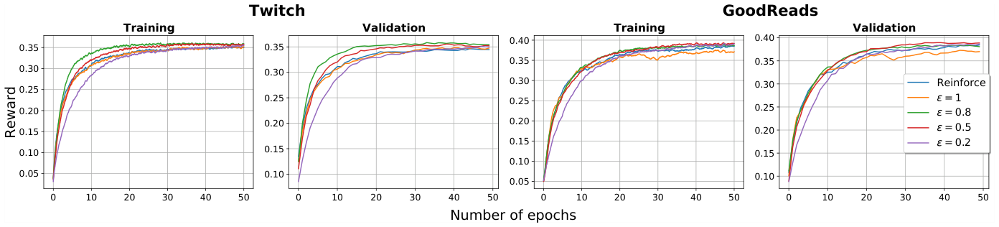

Fast Offline Policy Optimization for Large Scale Recommendation (大规模推荐的高效离线策略优化)
- 会议/期刊: AAAI 2023
- 作者与机构: Otmane Sakhi, David Rohde, Alexandre Gilotte（Criteo AI Lab / CREST-ENSAE）
- 推荐链路定位: 召回（softmax 策略的离线训练 + MIPS 在线检索）
- 研究方向: 强化学习与动态探索推荐 / 协同过滤与双塔召回
- 论文原文: https://arxiv.org/abs/2208.05327v4
- 开源代码: https://github.com/criteo-research/fopo
TL;DR (1分钟核心速览)
大规模推荐把推荐建模为离线 contextual bandit 的策略学习，但 softmax 策略梯度中的归一化常数 \(Z_\theta(x)\)与期望求和都需遍历全库\(P\)个物品，单步 SGD 复杂度\(O(P)\)，百万级目录下不可行。本文提出 FOPO：以协方差形式重写策略梯度消除\(Z_\theta\)，用自归一化重要性采样（SNIS）配合「均匀分布 + MIPS 检索 Top-\(K\)」的混合提议分布估计梯度，训练期即复用 HNSW 索引，复杂度降为\(O(\log P)\)。在 Twitch（79 万物品）与 GoodReads（233 万物品）的全库排序会话补全任务上，训练提速 5–25×（CPU 最多约 25×），策略平均奖励持平甚至更优。
Background & Motivation (背景与核心矛盾)
- 主流范式: 将推荐视为离线策略学习，目标 \(\hat{R}(\pi_\theta)=\frac{1}{N}\sum_i \sum_{a}\pi_\theta(a|x_i)\hat{r}(a,x_i)\)，奖励估计器可实例化为 IPS / DR / 裁剪变体，在线用\(\arg\max_a f_\theta(a,x)\) + MIPS 毫秒级检索。
- 前人局限: ①\(\nabla_\theta\log\pi_\theta\)含\(Z_\theta(x)=\sum_b e^{f_\theta(b,x)}\)，需全库求和；②REINFORCE 虽可用采样估计期望，但「从\(\pi_\theta\)采样」本身（含 Gumbel 技巧）同样是\(O(P)\)。二者叠加使每步梯度严格线性于目录规模。
- 核心洞察 (Key Insight): 策略梯度的归一化项可通过协方差恒等式彻底消去（Masrani et al. 2019 的 thermodynamic variational objective 思路）；而「采样」这一步可以用不依赖 \(Z_\theta\)的提议分布替代——只要该提议好采样、好评测、且贴近\(\pi_\theta\)。
- 本文切入点: 固定物品 embedding（Assumption 1），使训练期即可建静态 HNSW 索引，用 Top-\(K\)近似 MIPS 构造混合提议\(q_{K,\epsilon}\)，把梯度估计的两次求和都限制在\(K\ll P\)与\(S\) 个样本内。
Method (核心方法设计)
1. 整体框架 (Overall Architecture)
输入为用户历史交互经 SVD 物品向量均值池化得到的上下文 \(x\)；物品侧 embedding\(\beta\)由协同过滤 SVD 预训练并冻结，仅学习用户侧变换\(h_\theta(x)=\theta^\top x\)。训练时先用\(\beta\)建 HNSW 近似 MIPS 索引，每步查询\(h_\theta(x)\)取 Top-\(K\)集合\(\alpha_K(x)\)，混合均匀分布构造提议\(q_{K,\epsilon}\)，从中采\(S\)个候选动作，用 SNIS 权重重加权后估计「奖励—打分梯度」的协方差，反传更新\(\theta\)。推理时同一索引做\(\arg\max\) 检索，保证训练与部署打分路径一致。
flowchart TD
A["用户历史 X → SVD 物品向量均值池化得 x"] --> B["冻结 β，建 HNSW 索引"]
B --> C["查询 Top-K 集合 α_K(x)"]
C --> D["混合提议 q_{K,ε} = ε/P + (1-ε)κ"]
D --> E["采 S 个动作，SNIS 加权估计协方差梯度"]
E --> F["更新 θ（仅用户侧）→ 在线 MIPS argmax"]2. 关键设计拆解 (Key Designs)
-
协方差梯度：把归一化常数从梯度中消掉：痛点是不论 IPS 还是 DR，\(\nabla_\theta\log\pi_\theta\)都要\(Z_\theta(x)\)。作者将\(\nabla_\theta\log\pi_\theta(a|x)=\nabla_\theta f_\theta(a,x)-\mathbb{E}_{b\sim\pi_\theta}[\nabla_\theta f_\theta(b,x)]\)代回对数技巧，得到对单一随机变量\(a\) 的协方差形式： $\(\nabla_\theta\hat{R}_i(\pi_\theta)=\mathrm{Cov}_{a\sim\pi_\theta(\cdot|x_i)}\big[\hat{r}(a,x_i),\ \nabla_\theta f_\theta(a,x_i)\big]\)$ 直觉上，梯度只沿「奖励与相关性打分同向变动」的方向走，\(Z_\theta\) 被差分自然抵消；但代价是期望变成双层期望，需多个样本，采样成本问题仍未解决。
-
混合提议 + SNIS：把采样也做到 \(O(\log P)\)：既然不能从\(\pi_\theta\)采样，就用可快速采样的提议\(q\)做自归一化重要性采样，\(\mathbb{E}_{\pi_\theta}[g]\approx\sum_{s}\bar{\omega}_s g(a_s)\)，\(\omega_s=\frac{e^{f(a_s,x)}}{q(a_s|x)}\)，\(\bar\omega_s=\omega_s/\sum_{s'}\omega_{s'}\)，从而绕开\(Z_\theta\)（代价是引入随\(q\)与\(\pi_\theta\)距离下降的偏差）。提议取「Top-\(K\) softmax + 均匀」混合： $\(q_{K,\epsilon}(a|x)=\begin{cases}\frac{\epsilon}{P}+(1-\epsilon)\kappa(a|x), & a\in\alpha_K(x)\\ \frac{\epsilon}{P}, & \text{otherwise}\end{cases}\)$ 其中 \(\kappa\)是\(\alpha_K(x)\)上的重归一化 softmax。该设计三点契合要求：Top-\(K\)由近似 MIPS 给出故采样\(O(\log P)\)；评测只需\(K\)项求和；\(\epsilon\)使提议在训练早期（\(\pi_\theta\)近均匀）与后期（\(\pi_\theta\) 集中在头部）都贴近目标策略，控制偏差与方差。
-
训练目标、负采样与推理效率：无显式负采样——由提议分布承担「负例供给」，SNIS 权重自动完成纠偏，最终更新量为 $\(\text{grad}_\theta=\sum_{s=1}^{S}\bar{\omega}_s\big[\hat{r}_s-\bar r\big]\big[\nabla f_s-\overline{\nabla f}\big]\)$ 总损失即最大化 \(\hat R(\pi_\theta)\)（奖励估计器可插拔 IPS/DR）。单步复杂度\(O(\log P + S\cdot L^2)\)，与目录规模仅成对数关系；推理仍是一次近似 MIPS，\(O(\log P)\)。关键前提是 Assumption 1（冻结\(\beta\)）——索引只建一次，避免每步重建。
Experimental Setup & Evaluation Protocol (实验设置与评估协议)
- 数据集与预处理: 将用户-物品交互矩阵按会话切分；论文未采用 5-core 过滤，仅做会话对半划分。
| 数据集 | #Users | #Items（目录规模 P） | #Interactions | 稀疏度/密度 | 特征/场景说明 |
|---|---|---|---|---|---|
| Twitch | 500K | 790K | 未报告（用户-主播交互） | 未报告 | 直播平台会话补全 |
| GoodReads | 300K | 2.33M | 未报告（用户-书籍交互） | 未报告 | 图书推荐会话补全 |
- 数据划分与防穿越 (Splitting Strategy): 比例划分 + 会话内对半切分。每个用户的交互会话随机等分为观测部分 \(X\)与补全部分\(Y\)；再整体划分 train/test。\(X_{\text{train}}\)用于 SVD 求\(\beta\)（维度\(L\in\{10,100,1000\}\)）与构造上下文，\(Y\) 仅作奖励，测试集上下文与标签严格分离。
- 排名评测协议 (Ranking Protocol): Full-Ranking（全库未交互排序），无采样：\(R_{\text{test}}=\frac{1}{N_{\text{test}}}\sum_j \mathbb{I}[\arg\max_a f_\theta(a,x_j)\in Y_j]\)，即 MIPS 检索 Top-1 的命中率（平均奖励），未做负采样近似。
- 对比基线与超参设置: 基线为 REINFORCE（从真策略采样、精确 \(O(P)\)梯度）、\(\epsilon=1\)（纯均匀提议，最快但偏差大）及\(\epsilon\in\{0.2,0.5,0.8\}\)混合变体；另设「\(\beta\)可训练 vs 冻结」的对照。Adam，batch 32，lr\(10^{-4}\)（Twitch）/\(5\times10^{-5}\)（GoodReads），\(K=256\)，\(S=1000\)，跑 50 epoch；索引用 FAISS 的 HNSW。论文未报告显著性检验。
Key Experimental Results (实验关键数据)
1. 主实验对比 (Main Results)
| 方法 | Twitch 奖励（50 epoch，\(L{=}1000\)） | GoodReads 奖励（50 epoch） | 单步复杂度 | 相对训练耗时 |
|---|---|---|---|---|
| REINFORCE（精确 \(O(P)\)） | ~0.31 | ~0.39 | \(O(P)\) | 1×（基准） |
| 均匀提议 \(\epsilon=1\) | ~0.33 | ~0.38 | \(O(\log P)\) | 最快 |
| 混合 \(\epsilon=0.8\) | ~0.35（最优） | ~0.39 | \(O(\log P)\) | 与\(\epsilon{=}1\) 同量级 |
| 混合 \(\epsilon=0.5\) | ~0.34 | ~0.40（最优） | \(O(\log P)\) | 同上 |
| 混合 \(\epsilon=0.2\) | ~0.32 | ~0.39 | \(O(\log P)\) | 同上 |
（数值为原文图 2/3 上的近似读值，趋势与论文结论一致。）加速比：CPU 上 5–25×，GPU 上 5–10×，\(L\)越小（矩阵向量乘\(O(L^2)\) 不占主导）加速越显著；固定时间预算下 REINFORCE 表现最差，精心选择的混合提议始终略优于纯均匀提议。
2. 消融实验 (Ablation Study)
| 消融项 | 设置 | 指标 | 结果 |
|---|---|---|---|
| 冻结 \(\beta\)（Assumption 1） | Twitch\(L{=}10\)/\(L{=}100\) | \(r_P=R_{\text{trained}}/R_{\text{fixed}}\) | 0.54 / 0.40（可训练反而更差） |
| 同上 | GoodReads \(L{=}10\)/\(L{=}100\) | \(r_P\) | 0.83 / 0.71 |
| 同上 | 两数据集 | 耗时比 \(r_S\) | 1.00–1.01（几乎不省时） |
| 混合项 \(\epsilon\) | 1 → 0.8/0.5 | 奖励 | 纯均匀非最优，混合更优 |
| Top-\(K\) | 32→512 | 奖励曲线 | 只要覆盖头部候选即鲁棒 |
| 样本数 \(S\) | 50→1000 | 奖励 | 随\(S\) 增大单调改善，耗时仅微增 |
| 提议类型 | 均匀 vs 混合 | 每秒奖励 | 混合在固定预算下领先 |
3. 关键实验发现 (Key Findings)
- 冻结物品 embedding 不是妥协而是正则：可训练 \(\beta\)的训练耗时几乎不变（\(r_S\approx1.01\)），但奖励显著下降（Twitch\(L{=}100\)时仅为冻结版的 40%），且\(L\) 越大退化越严重——额外参数带来的方差破坏了 REINFORCE 的估计质量，这直接为 MIPS 静态索引的合法性背书。
- 速度优势来自「避开 \(Z_\theta\)+ 避开从\(\pi_\theta\)采样」，而非并行：CPU 上加速最大（25×）、GPU 上仍有 5–10×，说明增益源于复杂度阶数（\(O(P)\to O(\log P)\)），而非硬件吞吐；固定时间预算实验中 REINFORCE 因单步\(O(P)\) 几乎无法推进。
- \(\epsilon\)是「速度—精度」唯一需要调的旋钮，且最优点不在端点：\(\epsilon=1\)最快但非最优，Twitch 最优\(\epsilon=0.8\)、GoodReads 最优\(\epsilon=0.5\)；\(K\ge128\)后性能对\(K\)不敏感、\(S\)增大稳定降方差，二者都远小于\(P\)，故超参选择成本低。

Highlights & Limitations (亮点、对比与审稿批判)
- 与代表作对比 (vs. Prior Work): 相对 Swaminathan & Joachims 的 CRM / IPS 系列与 Dudík 的 DR，本文不改奖励估计器（正交贡献），只解决「大动作空间下优化不可行」；相对 Chen et al. WSDM'19 的 Top-\(K\)off-policy correction（面向生产系统、修正 REINFORCE 梯度但未解决\(O(P)\)），本文把训练复杂度真正降到对数级；相对 Dulac-Arnold et al. 的在线 RL + Fast KNN 候选生成，本文是离线学习且用 MIPS 构造提议分布而非候选集。另需强调：本文优化的是策略学习目标\(\mathbb{E}_\pi[\hat r]\)，与 softmax 最大似然的 sampled-softmax 类方法（Bengio & Senecal、Blanc & Rendle）数学形式不同，不能直接照搬。
- 可迁移亮点: ①「协方差梯度 + SNIS + ANN 提议」这套模板可迁移到任何大词表/大候选集的策略优化（如生成式推荐的自回归解码打分、多任务精排的 softmax 蒸馏）；②训练期即建索引、与线上检索共用同一索引，天然缓解训练—服务打分不一致（train-serving skew）。
- 审稿级局限批判: ①证据基础偏窄：仅 2 个协同过滤数据集、单一会话补全任务、无标准 Top-N 指标（HR@K/NDCG@K）与多随机种子显著性检验，奖励读值主要来自曲线图；②SNIS 引入的偏差使 SGD 收敛性缺乏理论保证（作者自认），且 \(\epsilon\)需按数据集手调；③Assumption 1 冻结\(\beta\)与端到端双塔训练范式相悖，若物品侧需随任务更新（如内容冷启动物品），索引需重建，\(O(\log P)\) 优势会被削弱；④在线检索仍依赖近似 MIPS 的召回率，Top-1 命中受索引精度影响。
Rating (四维评分)
- 方法创新性 (Novelty): ⭐⭐⭐⭐ （三个已有工具——协方差梯度、SNIS、HNSW——的组合极具针对性，把 \(O(P)\)真正降到\(O(\log P)\)，但单点技术均非首创）
- 评估协议与实验扎实度 (Protocol & Experiments): ⭐⭐⭐ （采用无偏 Full-Ranking 且目录规模真实达百万级，值得肯定；但仅 2 个数据集、无标准 Top-N 指标、无显著性检验，结论主要靠图曲线支撑）
- 写作与数学规范度 (Clarity & Rigor): ⭐⭐⭐⭐ （从 \(O(P)\) 瓶颈到协方差推导再到提议设计层层递进，复杂度与偏差来源交代清楚；对 SNIS 偏差下收敛性的处理略显回避）
- 工业落地与复现价值 (Industrial & Practical Value): ⭐⭐⭐⭐⭐ （代码开源、FAISS/PyTorch 实现直接可用，训练与线上共用 MIPS 索引，Criteo 工业背景，低算力机器即可跑大规模离线策略学习）